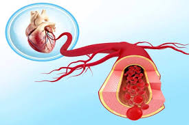

धमनी

धमनी लेख में मानव शरीर से संबंधित उल्लेख है।
- धमनियाँ वे रुधिर वाहिनियाँ हैं जो रुधिर को हृदय से शरीर के विभिन्न अंगों की ओर ले जाती हैं।
- पल्मोनरी धमनी के अतिरिक्त इनमें शुद्ध रुधिर बहता है।
- धमनियों में शुद्ध रक्त बहता है।
- धमनियों की दीवारें मोटी तथा लचीली होती हैं।
- धमनियों का भीतरी व्यास (गुहा) कम होता है।
- इनमें कपाट नहीं पाए जाते हैं।
- इनमें रुधिर अत्यधिक दबाव के कारण झटके के साथ बहता है।
- धमनियाँ रुधिर न रहने पर चिपचिपी नहीं हैं।
- इनका रंग गुलाबी या चटक लाल होता है।
- ये त्वचा से दूर गहराई में स्थित होती हैं।
- इनमें हर समय कुल रुधिर का लगभग 15% अंश भरा होता है।